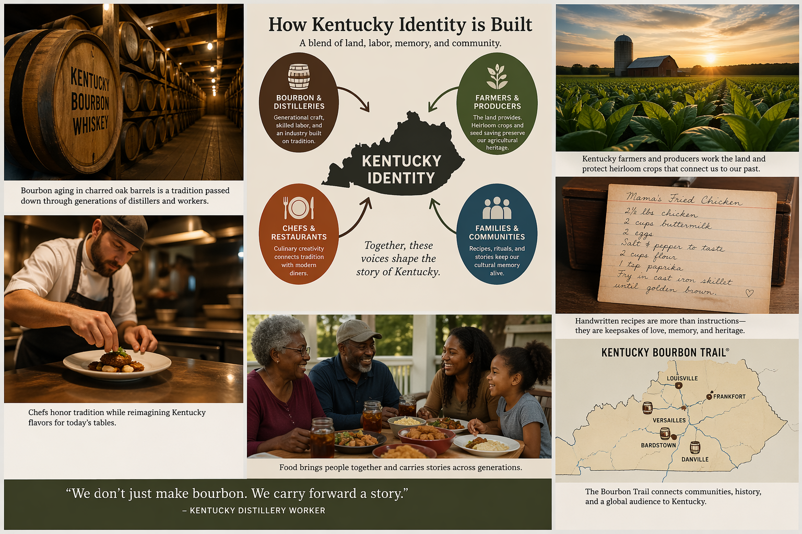
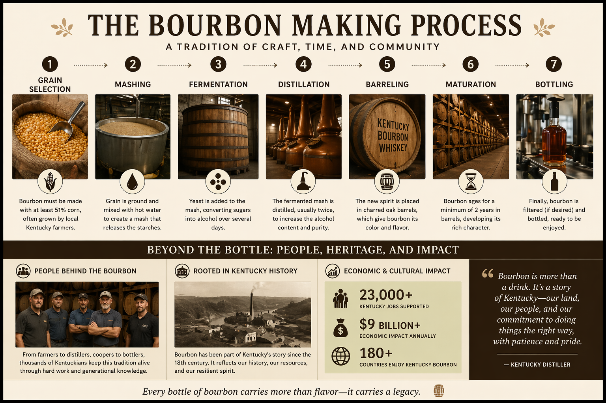
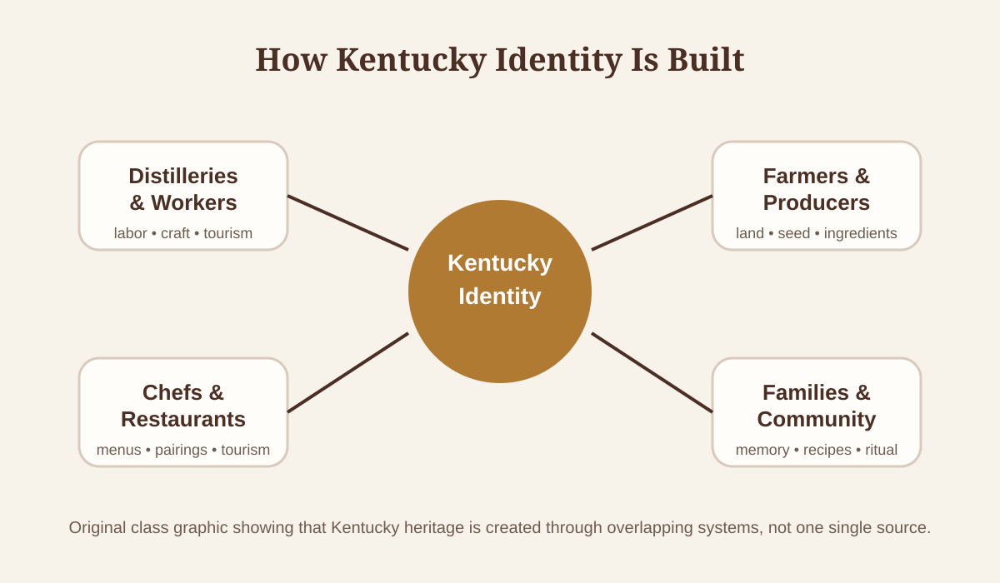
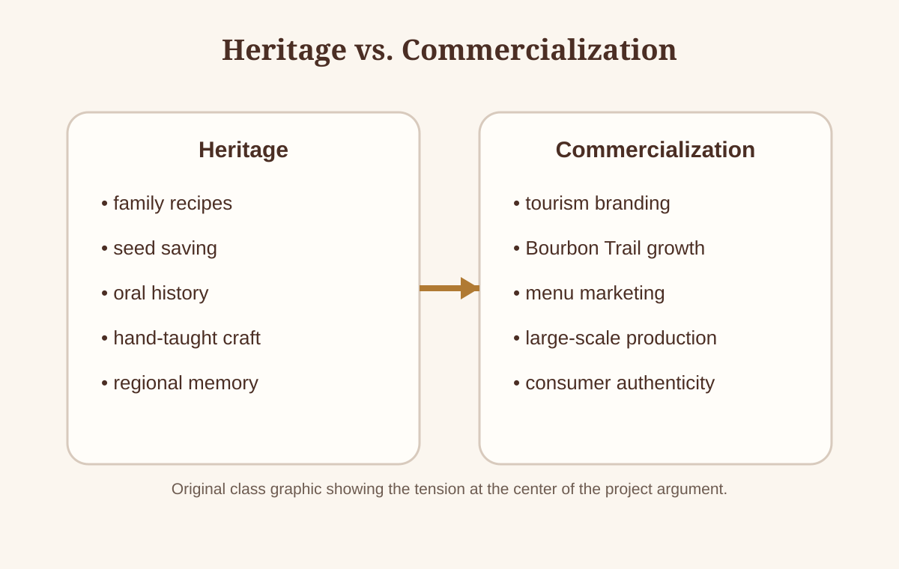

Central Issue
Kentucky food and bourbon traditions are often celebrated as symbols of local pride, but they are also shaped by tourism, branding, and economic pressure. The project's central question asks how bourbon and local Kentucky foods work together to shape regional identity, storytelling, and culinary tradition.
Our argument is that bourbon and food function as living records. They preserve family memory, labor history, agricultural practice, and regional belonging. At the same time, those same traditions are packaged for visitors, restaurants, and consumers who often encounter Kentucky culture through curated experiences instead of everyday life. That tension between preservation and commercialization drives the entire site.
- a central argument grounded in research rather than summary
- four connected stakeholder perspectives
- original multimedia that explains key ideas
- a works cited section based on the group's source base
- clear contributor roles for the final project
How Kentucky Identity Is Built

Placing this graphic early helps the site act like a digital essay instead of a disconnected website. It gives readers a visual map before they move into the written stakeholder analysis.
Why This Topic Matters
Cultural Identity
Bourbon and local foods carry stories of migration, labor, ritual, and place. They are not just products; they are symbols people use to define Kentucky itself.
Economic Stakes
The bourbon industry is tied to jobs, tourism, agriculture, restaurants, and local branding, which means cultural heritage is also an economic engine.
Authenticity
As heritage moves into tourism and marketing, the gap between lived culture and packaged experience becomes harder to ignore. The question becomes who controls the story.
Stakeholder Perspectives
Each stakeholder below contributes a distinct research-based voice while supporting the same central argument: Kentucky heritage is simultaneously preserved and commercialized. Together, these perspectives form the project's multi-voiced analysis.
Distilleries & Workers
Bourbon as Heritage: The Craft Behind the Brand
Kentucky bourbon carries a story that goes back centuries. Before it became a multi-billion-dollar industry, bourbon was a product of necessity — distillers on the Kentucky frontier converting surplus corn into a shelf-stable, tradeable commodity. Frederick H. Smith traces this history in Bourbon Empire, explaining how bourbon's development was tied directly to Kentucky's land, its agricultural surplus, and the labor of early settler communities who built the craft from the ground up (Smith). Those roots are not decorative history. They form the foundation that every modern distillery builds its brand on — stories of copper stills, hand-laid barrels, and master distillers who learned from generations before them.
The tension begins as soon as one examines the actual structure of the modern bourbon industry. Smith documents how small family operations gradually gave way to large corporate consolidation, particularly after Prohibition and again during the industry's late twentieth century expansion (Smith). Today, some of the most celebrated "craft" bourbon labels are owned by multinational spirits corporations, yet they continue to market themselves through the language of family, place, and tradition. This is not an accident. It is a deliberate rhetorical choice, and it tells us a great deal about how heritage functions in the bourbon economy. Bourbon is marketed as local heritage while also being a large-scale industry built on branding, tourism, and expansion — and understanding that contradiction is essential to understanding the distillery and worker stakeholder perspective.
From Regional Spirit to Global Industry
The transformation of bourbon from regional product to international luxury brand is one of the defining economic stories of modern Kentucky. Smith explains that the industry's growth was shaped not just by product quality but by the ability to tell a compelling story about where bourbon came from and who made it (Smith). As global demand for American whiskey rose sharply in the early twenty-first century, distilleries expanded production at a rate that would have been unrecognizable to the craftsmen who built the trade. The Kentucky Bourbon Trail, which now draws visitors from every state and dozens of countries, became the industry's answer to how you sell heritage at scale.
The Kentucky Distillers' Association frames this transformation in explicitly economic terms. According to the KDA's official impact data, bourbon is now a $9 billion industry in Kentucky, generating over 23,000 jobs, an annual payroll of $1.63 billion, and $358 million in state and local tax revenue (Kentucky Distillers' Association, "Impact"). The same data notes that distillers are in the middle of a $5.4 billion capital investment across the state, adding new facilities, visitor centers, and production capacity (Kentucky Distillers' Association, "Impact"). The scale of that investment makes it obvious that bourbon is no longer a cottage industry. It is a fully developed economic ecosystem that the state of Kentucky depends on in ways that make it politically and culturally impossible to separate heritage from commerce.
What that scale means for the workers inside the industry is a more complicated question. As distilleries expand, the nature of production changes. Hand-crafted processes give way to automated systems. Workers who once understood the entire arc of production — from grain selection to barreling to aging — increasingly specialize in narrower tasks within a larger industrial process. Smith's analysis suggests this specialization has real trade-offs. The craft knowledge becomes concentrated in fewer hands, making the stories of authenticity that distilleries tell easier to use as marketing and harder to verify as genuine reflection of how the product is actually made (Smith).
The Economics of Bourbonism
A 2021 feature in The Lane Report coined the term "bourbonism" to describe the complete reorientation of Kentucky's tourism economy around bourbon culture. The article documents how Louisville rebranded itself as "Bourbon City" and saw annual visitation nearly double from 11 million in 2007 to over 19 million by 2019 ("Bourbonism"). That growth was not accidental. It was the product of a deliberate, coordinated strategy between distillers, state tourism officials, and economic development leaders who recognized that bourbon offered something other consumer products could not: a specific place, a specific process, and a specific story that no other region could replicate.
The Lane Report piece also captures how bourbonism functions as a collaborative ecosystem. Rather than competing with each other, distilleries under the Kentucky Bourbon Trail umbrella collectively market the state as a destination ("Bourbonism"). Over 74% of Bourbon Trail visitors come from out of state, which means most of the economic benefit represents new money entering the Kentucky economy rather than dollars simply moving between local businesses (Kentucky Distillers' Association, "Impact"). For a state with historically limited economic diversification, that tourism pipeline is enormously valuable — and it has made bourbon inseparable from Kentucky's public identity in ways that were unimaginable even thirty years ago.
Bourbonism also raises questions that promotional materials are careful not to ask. When an industry is built on the promise of authenticity, what happens when that authenticity is stretched by growth? The Lane Report's sources focus on macro-level economic gains without addressing whether the benefits of bourbon revenue reach the distillery workers, barrel coopers, and grain farmers whose labor makes the product possible ("Bourbonism"). The term "bourbonism" captures a real phenomenon — the absorption of bourbon into Kentucky's core identity — but the economic data alone does not reveal whether that transformation strengthens or strains the communities it depends on.
The Bourbon Trail as Cultural Machine
The Kentucky Distillers' Association's Kentucky Bourbon Trail website presents itself as a guide to cultural experience and heritage tourism. Reading it carefully reveals something more deliberately constructed. The language leans heavily on words like craftsmanship, tradition, and authenticity while simultaneously pointing to visitor numbers and revenue growth as the markers of success (Kentucky Distillers' Association, "Kentucky Bourbon Trail®"). The message is that the Trail is both a genuine cultural experience and a highly effective economic product — and the fact that it can be both simultaneously is exactly what the broader argument of this project is exploring.
The Trail's design — connecting distilleries across the state into a single itinerary — is an act of industrial coordination dressed in the language of cultural discovery. Distilleries that might otherwise compete are united under a common brand, and that brand's primary product is the experience of authenticity (Kentucky Distillers' Association, "Kentucky Bourbon Trail®"). Visitors are invited to believe they are accessing the real Kentucky — the place where bourbon has always been made the way it has always been made. Workers who give tours, pour samples, and explain production processes are performing heritage as much as they are demonstrating it. The performance is not dishonest. Bourbon really is made in Kentucky, and the traditions really do have deep roots in the state's agricultural history. But the Trail's version of that story is curated, smoothed, and packaged for a tourism market that demands a specific kind of experience.
Authenticity as Performance: What the Research Shows
The most analytically rigorous source in this research base is a peer-reviewed study by J. Cameron Verhaal and Glenn R. Carroll published in the journal Poetics. Their research investigates what actually makes consumers perceive a distillery as authentic, and the findings complicate the simple story that heritage branding tells. Verhaal and Carroll found, through multiple experimental studies and review analyses, that visible, costly investments in craft production matter far more to consumers than intangible claims about family history or master distiller lore (Verhaal and Carroll). Having on-site stills, growing your own grain, and being transparent about the production process are the markers consumers use to evaluate authenticity. Outsourcing any portion of production — even while maintaining a heritage brand — significantly undermines how consumers rate a distillery's credibility (Verhaal and Carroll).
This finding is important because it means heritage stories are not sufficient on their own. Consumers can sense the difference between a distillery that visibly commits to craft and one that uses the language of tradition while contracting production elsewhere. What Verhaal and Carroll call "costly signaling" — the idea that authenticity must be demonstrated through real, observable, material investment — maps directly onto how the Kentucky Bourbon Trail has been designed (Verhaal and Carroll). The emphasis on visible production, facility tours, and transparency about the distilling process is authenticity management, designed to show rather than tell.
The implication for distillery workers is significant. If visible craft is what creates consumer trust, then the workers — the coopers, the stillmen, the warehousing crews — are not just employees. Their labor, when visible to tourists on the Trail, serves a rhetorical function that extends far beyond the production line. Workers are simultaneously producers and proof of authenticity. This is a dynamic that Smith anticipates in Bourbon Empire but does not fully develop, and it is one that the Verhaal and Carroll research makes much clearer (Verhaal and Carroll; Smith). The distillery worker's presence at the still or the barrel house is part of what the tourism experience sells.
The Contradiction at the Core
The central argument of this stakeholder perspective is that distilleries are simultaneously preserving bourbon heritage and commodifying it, and that these two activities create a tension that neither marketing nor economic data fully resolves. Smith's historical account shows how that tension developed over generations (Smith). Verhaal and Carroll's research shows how it operates at the level of consumer psychology (Verhaal and Carroll). The KDA's statistics show how enormous the economic stakes have become (Kentucky Distillers' Association, "Impact"). And The Lane Report's account of bourbonism shows how fully that tension has been absorbed into Kentucky's economic and cultural identity ("Bourbonism").
What this means for workers is that their labor carries a double meaning. They produce a product, and they produce a story. The bourbon in the barrel is authentic in every material sense — the grain, the water, the oak, and the time are real. But the narrative sold alongside it is constructed, maintained, and refined by an industry that has learned how to monetize heritage at extraordinary scale. Workers are at the center of both, which is why the distillery and worker perspective is one of the most revealing and complicated angles from which to examine how Kentucky identity is built, preserved, and sold at the same time. For this project's argument to work, distilleries cannot be treated only as commercial enterprises or only as cultural stewards — they are both, always, at once.
That duality is also what makes distillery workers such a revealing lens for this project. They are not passive recipients of the industry's heritage narrative. They are the people who actually know whether the stories being told match the reality of production — who understand where shortcuts have been taken, where craft has been genuinely preserved, and where the gap between marketing and practice is largest. The worker's perspective is the most grounded and least mediated angle on what bourbon heritage actually means in daily practice. Smith's account of the industry's history makes this clear: the people who built bourbon culture were laborers, farmers, and craftsmen whose names rarely appeared in the promotional materials that eventually made the product famous (Smith). Verhaal and Carroll's study shows that consumer trust ultimately depends on whether those workers are still visible — whether their craft remains legible in the product being sold (Verhaal and Carroll). That is not a minor detail. It means the workers are, in a real sense, the proof that the heritage claim is true or false. Their role in the bourbon economy is more important, and more politically complicated, than a simple labor story would suggest. The economic numbers reported by the KDA tell part of the story (Kentucky Distillers' Association, "Impact"). The Lane Report's account of bourbonism tells another ("Bourbonism"). But the workers on the production floor — the ones pouring tours and turning barrels and running the stills — are the element that makes the whole story credible, and their position at the intersection of heritage and commerce is the heart of what this stakeholder perspective contributes to the project.
Local Farmers & Producers
The Ground Beneath the Bottle: Farmers as Cultural Keepers
Kentucky's food and bourbon traditions are impossible to understand without the farmers who supply the grain, grow the corn, and maintain the land. Local farmers and ingredient producers are not simply an agricultural resource for the bourbon industry. They are the first link in a chain of cultural meaning that runs from the soil through the barrel and into the glass. Cheryl Brown and Stacy Miller argue in their review of local food market research that direct-to-consumer agricultural systems do more than generate income for small producers. They strengthen community identity, build trust between producers and consumers, and protect small-scale farming from being displaced by industrial agriculture (Brown and Miller). In the context of Kentucky bourbon and food culture, this argument takes on particular weight. The farmers who grow the corn, rye, and wheat used in bourbon production are not anonymous commodity suppliers. They are part of the cultural ecosystem that gives the product its regional meaning.
Brown and Miller's research focuses on farmers markets and Community Supported Agriculture programs, but the principles they identify apply directly to the ingredient economy surrounding bourbon production. When consumers can see who grows their food, where it comes from, and how it is tended, they form relationships with the land and the people on it (Brown and Miller). Those relationships are the foundation of what Helen La Trobe calls place-based food identity — the idea that food carries meaning not just because of how it tastes, but because of where it comes from and who made it (La Trobe). Local Kentucky ingredients, from the limestone-filtered water in the region's aquifer to the heritage corn varieties that smaller distilleries continue to use, carry that kind of meaning. When producers disappear, that meaning disappears with them.
Local Markets and Community Identity
The relationship between local food markets and community identity is well-documented in the agricultural research literature. Brown and Miller's analysis shows that farmers markets and CSA programs create economic stability for small producers while simultaneously building the social fabric of communities (Brown and Miller). When farmers sell directly to the people who will eat what they grow, the transaction becomes more than economic. It becomes a form of accountability — a visible connection between production and consumption that industrial supply chains systematically break. In Kentucky's food culture, that connection matters because so much of the region's culinary identity is built on knowing where things come from and who grew them.
La Trobe extends this argument by looking at the consumer side of the equation. Her study of farmers market behavior shows that consumers seek out local food not just for freshness or price, but because they value transparency and authenticity (La Trobe). They want to know that what they are eating was grown by someone specific, in a specific place, using specific methods. That desire for transparency is the same consumer impulse that drives bourbon tourism — visitors want to see the stills, smell the warehouses, and understand the process. La Trobe's research suggests that this desire reflects a deeper human need to connect consumption to culture and to feel that the products being used are genuinely tied to a place and a tradition (La Trobe). When local ingredient producers maintain that connection, they are doing cultural work as much as economic work.
The Transparency of Place: Why Local Matters Beyond the Market
La Trobe's research also highlights the environmental and cultural dimensions of local food systems. Shorter supply chains mean less transportation, more seasonal eating, and farming practices more closely tied to local conditions (La Trobe). In the context of Kentucky farming, this represents the difference between producers who have adapted their methods to the specific soil, climate, and water conditions of their region over generations, and industrial suppliers who optimize for uniformity and scale. The heirloom corn varieties that some Kentucky distilleries still use for their mash bills, for example, could not be sourced from a commodity grain supplier. They require relationships with specific farms, specific farmers, and land that has been cultivated in particular ways across many seasons.
This is why the preservation of local producers is not just an economic question but a cultural one. When a family farm stops growing heritage grains because the commodity market makes it impossible to survive, the knowledge of how to grow and tend those grains — knowledge passed down through generations of trial and observation — is at serious risk of being lost. The agricultural economy that supports Kentucky bourbon is not interchangeable with any other. It is tied to specific people and specific places in ways that make the farmers who maintain it irreplaceable. The "Kentucky Bourbon as an Agricultural and Economic Engine" piece from Kentucky Food & Farm reinforces this connection, showing how local grain production, water quality, and regional agricultural knowledge are foundational to what makes Kentucky bourbon distinctively Kentuckian ("Kentucky Bourbon as an Agricultural and Economic Engine").
Fairness, Labor, and the Question of Who Benefits
Stephen Toler and his co-authors contribute a dimension to this analysis that is often overlooked in discussions of local food culture: the question of fairness. Their experimental research shows that consumers are willing to pay premium prices when they believe farmers are being compensated fairly and treated with dignity (Toler et al.). This willingness is not purely altruistic. It reflects a recognition that fair treatment of producers is part of what makes a food system culturally sustainable. A supply chain that exploits the people at its beginning cannot honestly claim to be preserving the traditions those people carry.
In the context of Kentucky's bourbon and food economy, the fairness question becomes urgent when tourism and commercialization grow faster than the farming communities that support them. The bourbon industry's massive economic footprint does not distribute itself evenly. Much of the value accrues to distillers, tourism operators, and hospitality businesses rather than to the grain farmers who supply the raw materials. Toler et al. argue that when consumers are made aware of these disparities, they tend to reorient their purchasing toward producers they believe are being treated fairly (Toler et al.). That consumer awareness is itself a form of cultural preservation — it keeps the human beings at the beginning of the supply chain visible and valued rather than absorbed invisibly into a branded product.
Modernization and Its Costs: Innovation and Traditional Knowledge
The relationship between agricultural modernization and traditional knowledge is more complicated than simple narratives of progress or loss suggest. Prayer Monamodi and colleagues studied the impact of innovative irrigation systems on smallholder farmers in South Africa and found that modern technology significantly increases crop yields and productivity (Monamodi et al.). Farmers who adopted modern irrigation saw measurable improvements in their economic outcomes. At the same time, the study notes that adoption rates were shaped by age, income level, and existing production costs — factors that tend to favor larger or more established operations over smaller or more traditional ones (Monamodi et al.).
The parallel to Kentucky farming communities is instructive even though the geographic contexts differ. Technology that increases efficiency can protect livelihoods. But it can also shift agricultural practices away from older, hand-taught methods in ways that are difficult to reverse. When a Kentucky farmer adopts a system that increases yield but reduces the need for the intensive, attentive cultivation that heritage varieties require, something changes about what that farmer knows and how they work. The efficiency gain is real, but so is the potential loss of the specific, local knowledge that made that farm's production culturally distinctive. This tension between modernization and tradition is not unique to Kentucky, but it plays out in the bourbon and food economy with particular intensity because so much of that economy's cultural value depends on the claim that things are still done the way they have always been done.
Land, Loss, and Memory
The most direct statement of what is at risk when local producers are displaced comes from the research of Elias Kebede and Mehari Getaneh, who study land disputes between farmers and local governments in an African context but draw conclusions that extend well beyond their specific geography. Their findings show that when farmers lose land — through expropriation, economic pressure, or legal displacement — they lose more than property (Kebede and Getaneh). They lose the generational connection to that land, the accumulated knowledge of how to work it, and the community relationships built around shared agricultural practice. Compensation for lost land, even when it is forthcoming, does not restore what was embedded in the act of farming that specific ground over time (Kebede and Getaneh).
In Kentucky, land loss takes different forms than government expropriation. Economic pressure from consolidation, rising land values, and changing market conditions can force small farms to sell or convert to different uses. As bourbon tourism expands and land values near major distilleries rise, the cost of farming increases for families who do not own large enough acreages to absorb those pressures. When those farms disappear, the traditions tied to them — the seed varieties kept across generations, the cultivation methods adapted to local soil and weather, the knowledge of when to plant and when to hold — are at serious risk of being lost alongside the land itself. The people who carry that knowledge cannot simply be replaced by new employees with different training.
When Ingredients Become Industrial
Donald Pszczola's analysis of ingredient innovation in the food industry offers a cautionary counterpoint to celebrations of local production. His review of commercially successful ingredient modifications — sodium reduction, protein reformulation, flavor standardization — documents how industrial food production consistently prioritizes scalability, shelf stability, and market appeal over the specific character of place-based ingredients (Pszczola). The result is a food system that is enormously efficient and enormously uniform.
For Kentucky's food culture, that uniformity represents a threat. The distinctiveness of Kentucky bourbon, the specific character of Kentucky country ham, the particular quality of regional grain — these products derive their cultural meaning from the specific conditions under which they are produced. When those conditions are standardized in the name of efficiency, some of what makes them distinctively Kentuckian is eroded. Pszczola's article celebrates industrial innovation, but reading it from the perspective of a local producer makes clear that the direction of innovation is not culturally neutral (Pszczola). It tends toward uniformity, and uniformity is the opposite of heritage.
The Farmer's Stake in the Story
What this body of research adds up to is a clear argument: the preservation of local farmers and ingredient producers is not separate from the preservation of Kentucky's food and bourbon culture — it is the foundation of it. Brown and Miller show that local markets build community and protect small producers from industrial displacement (Brown and Miller). La Trobe shows that consumers value the transparency and place-based identity that local production offers and that this value is connected to deeper cultural needs (La Trobe). Toler et al. show that fairness in the supply chain is part of what makes a food system culturally sustainable over time (Toler et al.). Monamodi et al. and Kebede and Getaneh show that modernization and land displacement carry real costs for the knowledge and tradition embedded in agricultural practice (Monamodi et al.; Kebede and Getaneh). And Pszczola's account of industrial ingredient innovation shows where the commercial logic of food production tends to lead when no one insists on the value of the local and the specific (Pszczola).
Local farmers are not a supporting cast in the story of Kentucky identity. They are the story's foundation. Every barrel of bourbon, every regional dish, every food tradition that visitors come to Kentucky to experience was made possible by the labor, knowledge, and land stewardship of the producers who grow what the state has built its identity on. When those producers are squeezed out by commercialization, when their ingredients are replaced by industrial equivalents, or when their land is absorbed by expanding economic development, the culture does not simply adapt. It loses the thing that made it meaningful in the first place.
Chefs & Restaurant Owners
Chefs as Cultural Translators
In Kentucky, chefs and restaurant owners occupy a unique position in the broader ecosystem of bourbon and food culture. They do not grow the grain, distill the spirit, or inherit recipes from grandparents who worked the land for generations. Instead, they translate those traditions — interpreting heritage through menus, pairings, and dining experiences that are simultaneously authentic and constructed. Steve Coomes captures this dynamic in his examination of bourbon-food pairing, arguing that combining bourbon with the right foods does more than improve flavor. It creates a deeper cultural experience by connecting the diner to the stories, land, and labor behind what they are consuming (Coomes). A well-executed bourbon pairing is not just a culinary choice. It is a statement about Kentucky identity.
The position of chefs in this story is complicated by the fact that they serve two audiences simultaneously. Local Kentuckians who eat and drink in these restaurants carry expectations shaped by their own relationship to the food and the bourbon — expectations grounded in family memory, regional belonging, and lived experience. Tourists who arrive via the Kentucky Bourbon Trail carry different expectations: they want a curated, representative, and easily legible version of Kentucky culture. Carson Smith's peer-reviewed research on culinary tourism shows that restaurants are increasingly central to the tourist experience itself, not just adjacent to it (Smith). Restaurants and chefs, in other words, are part of what visitors understand as authentic Kentucky — which means they carry an enormous amount of cultural responsibility even when they are primarily focused on the business of running a kitchen.
Bourbon on the Menu: Pairing as Storytelling
Fred Minnick's guide to bourbon appreciation offers one of the clearest accounts of how bourbon has moved from the glass into the kitchen. Minnick catalogs the flavor profiles that make different bourbon styles compatible with different foods — the caramel and vanilla notes that complement desserts and cured meats, the spice and oak that work with grilled proteins and aged cheeses (Minnick). But the significance of his analysis goes beyond a tasting guide. What Minnick is really describing is the process by which bourbon becomes embedded in the dining experience itself — present not just as a drink, but as a sauce, a marinade, a glaze, a flavor that runs through an entire meal.
When bourbon appears throughout a menu rather than only in a glass, it becomes part of how a restaurant constructs its identity. The kitchen is claiming a relationship to the local spirits tradition. It is saying that the food and the bourbon belong together — that they share a geography, an agricultural base, and a set of flavors that are specific to Kentucky. Coomes makes this explicit, arguing that the combination of bourbon and food creates an experience that is uniquely tied to the region's cultural traditions (Coomes). For chefs, this is an opportunity to root their restaurants in something larger than their individual menus. But it is also a responsibility, because the claim to regional authenticity requires genuine knowledge of and engagement with the traditions being invoked.
Clay Risen's history of American bourbon adds important context here. Risen traces how bourbon became not just a regional drink but a symbol of American identity, particularly as its cultural prestige grew through the craft spirits movement of the early twenty-first century (Risen). That growing prestige changed what it meant for a restaurant to incorporate bourbon into its identity. In the early decades of the craft revival, a bourbon-focused menu or pairing program was a distinctive choice. As the Bourbon Trail grew and tourism expanded, it became more expected — even obligatory for restaurants near major distilleries. Risen's historical perspective helps explain why the relationship between restaurants and bourbon culture feels both deeply authentic and commercially driven at the same time (Risen).
Adapting Tradition: The New Southern Table
John T. Edge's examination of Southern food culture captures one of the central tensions that Kentucky chefs navigate. Edge argues that the best contemporary Southern chefs do not simply preserve tradition by recreating old recipes unchanged. Instead, they preserve tradition by adapting it — taking the logic of a dish, the ingredients and techniques that define it, and finding ways to make it relevant to a contemporary dining context without abandoning its historical and cultural roots (Edge). This approach is not nostalgia. It is stewardship, and it requires deep understanding of where the food came from and what it means.
The distinction between preservation and adaptation is critical for understanding what Kentucky chefs do with the bourbon and food traditions they inherit. A chef who serves a bourbon-glazed country ham made with locally sourced heritage pork and a small-batch distillery's product is not simply reproducing a historical dish. They are making an argument about what Kentucky food culture should look like in the present. They are choosing which traditions to honor, which producers to support, and which flavors to center in a dining experience designed for a diverse and often well-traveled audience (Edge). Those choices are not neutral. They shape how both local and visiting diners understand what Kentucky food culture is and who it belongs to.
Edge's analysis also raises an uncomfortable question: who gets to decide what counts as authentic adaptation versus commercial simplification? When a restaurant adjusts a traditional recipe to suit the tastes of tourism-oriented clientele — adding sweetness, reducing unfamiliar flavors, smoothing out the regional idiosyncrasies that give a dish its character — is it preserving heritage or undermining it? There is no single answer, but the question itself is essential to understanding what chefs do when they position their restaurants within Kentucky's food and bourbon identity.
From Farm to Kitchen: Local Ingredients and Regional Identity
The connection between chefs and the farmers who supply their kitchens is one of the most significant and underappreciated dimensions of Kentucky food culture. A piece from Kentucky Food & Farm explores how bourbon's agricultural foundation — the corn, rye, and wheat grown by Kentucky farmers — extends into the broader food economy, with restaurants and chefs depending on the same local agricultural systems that support the distilling industry ("Kentucky Bourbon as an Agricultural and Economic Engine"). This connection is not incidental. It is what makes it possible for a restaurant to make genuine claims about local sourcing and regional identity.
When chefs build relationships with local farmers and source ingredients specific to Kentucky — the same regional grain varieties, the same heirloom vegetable and livestock breeds raised in the state for generations — they strengthen the web of connections that gives Kentucky food culture its coherence. A meal that uses local bourbon, local grain, local produce, and local meat is not just regionally themed. It is regionally grounded in a way that cannot be replicated by importing Kentucky-branded products and applying them to a generic menu. That groundedness is what Edge describes when he talks about tradition preserved through genuine adaptation rather than simply imitated for effect (Edge). The kitchen's sourcing decisions are cultural decisions.
The Kentucky Food & Farm source also shows how restaurants are part of the economic ecosystem that sustains local agriculture. When chefs make sourcing decisions that prioritize local producers, they are participating in the same agricultural economy that the bourbon industry depends on ("Kentucky Bourbon as an Agricultural and Economic Engine"). That participation matters economically, but it also matters culturally. It signals to both suppliers and diners that the restaurant sees local production as something worth protecting — not just as a marketing claim, but as an actual commitment embedded in how the kitchen operates.
Culinary Tourism and the Restaurant as Heritage Experience
Carson Smith's research on culinary tourism in Kentucky offers the most direct academic treatment of the role restaurants play in shaping what visitors understand as Kentucky culture. Smith's peer-reviewed study shows that the popularity of the Kentucky Bourbon Trail has substantially increased demand for local dining experiences, bourbon tastings, and restaurant-based cultural programming (Smith). Restaurants near the Trail attract visitors who are specifically looking for an experience that feels integrated with the bourbon and food culture of the region, not just a meal. They want to eat and drink something that feels genuinely Kentuckian, and restaurants are where that desire is most often met.
This means that for many visitors, a restaurant meal is their primary encounter with Kentucky food culture. They may visit one or two distilleries on a trip, but they will almost certainly eat in restaurants. What those restaurants choose to put on the menu, how they explain it, and what stories they tell about their ingredients and preparations — all of this shapes the visitor's understanding of what Kentucky food culture is (Smith). Chefs and restaurant owners are, in this sense, storytellers. Their menus are arguments about regional identity, and those arguments reach a very wide and diverse audience.
Smith's analysis also points to a tension that the culinary tourism literature cannot fully resolve. When a restaurant is designed primarily for the tourism experience — when its menu, its decor, and its marketing are all oriented toward the expectations of Bourbon Trail visitors — how does it serve the local community that existed before the tourists arrived? There is a real risk that restaurants optimized for tourism gradually lose their connection to the everyday food culture of the people who live in the region year-round (Smith). This is the same tension this project identifies across all four stakeholder perspectives: heritage is always at risk of being replaced by a performance of heritage that looks authentic but serves primarily commercial ends.
Who Controls the Story When Heritage Becomes a Menu?
Ultimately, the chefs and restaurant owners stakeholder perspective raises a fundamental question about cultural authority: when heritage traditions are translated into dining experiences for a broad and diverse audience, who controls the story? Coomes and Minnick both suggest that bourbon's flavor profile and cultural associations can be leveraged by skilled chefs to create genuinely meaningful experiences (Coomes; Minnick). Edge's analysis shows that adaptation can be a form of preservation when it is done with knowledge, care, and genuine commitment to the traditions being translated (Edge). But Smith's research on culinary tourism makes clear that commercial pressures can gradually shift a restaurant's orientation away from the community and toward the tourist market in ways that erode the very authenticity they are trying to sell (Smith).
The best Kentucky chefs seem to hold both concerns in tension — honoring the food traditions of the region while also making their work legible and appealing to visitors who encounter Kentucky culture through their dining rooms. Risen's historical framing is helpful here: bourbon became a symbol of American identity precisely because it was never frozen in time (Risen). It evolved, adapted, and grew without losing its essential character. That is the model for what successful culinary stewardship looks like — not a museum piece of a menu, but a living translation of a tradition that is still being made. The restaurant is where the tension between preservation and commercialization becomes literal. It is on the plate, in the glass, and in every decision a chef makes about what is worth keeping and what is ready to change.
What makes the chef and restaurant owner perspective so valuable to this project is precisely this quality of being in-between. Chefs are neither the origin of the traditions they cook nor simply their consumers. They are active interpreters, making choices every day about which ingredients to source, which recipes to honor, which adaptations serve the tradition and which ones simply serve the market. Minnick's work on bourbon and food pairing shows how those choices can create genuine depth of experience (Minnick). Coomes shows how they connect to regional storytelling (Coomes). Edge shows how they can preserve culture even when the forms change (Edge). And Smith's research on culinary tourism shows how the stakes of those choices extend well beyond the dining room — shaping what thousands of visitors take away as their understanding of what Kentucky is and what it stands for (Smith). Chefs are not just cooking. They are arguing. And the argument they make, one plate at a time, is one of the most visible and consequential contributions to how Kentucky's heritage survives or changes in the face of commercial growth.
Families & Community
Families and community members preserve the emotional core of the project. Handwritten recipes, oral history, and food rituals are often the forms through which people inherit Kentucky identity at home rather than through public branding. This stakeholder reminds the project that culture starts in kitchens, tables, and repeated practices long before it is turned into tourism.
This perspective also adds the site's strongest emotional tension: once traditions move from homes and communities into digital media or large public narratives, some of their context can be simplified. Families therefore serve as the project's reminder that heritage is lived before it is marketed.
Research Questions
Distilleries & Workers
- How do distillery workers pass down production knowledge across generations?
- What tensions exist between heritage bourbon practices and commercial demand?
- How has the Kentucky Bourbon Trail reshaped the relationship between authenticity and tourism?
Local Farmers & Producers
- How does seed saving preserve cultural memory in Kentucky farming communities?
- What happens to traditional agricultural knowledge when small farms disappear?
- How do local producers maintain heirloom practices amid market pressure for uniformity?
Chefs & Restaurant Owners
- How do Kentucky chefs balance heritage recipes with modern dining expectations?
- What role do restaurants play in keeping or transforming food-based traditions?
- How does tourism influence which local dishes get preserved versus which get reinvented?
Families & Community
- How do family food rituals shape Kentucky regional identity across generations?
- What is lost when food traditions move from kitchens to social media platforms?
- How do community cookbooks and oral histories function as cultural archives?
Multimedia & Visual Evidence
Each multimedia piece below is placed where it matters most — connected to a specific research argument rather than used as decoration. Each one teaches or explains something that writing alone cannot as efficiently convey.
Bourbon Process Infographic

Stakeholder Relationship Map

Heritage vs. Commercialization

Works Cited
- "Featured Story: Bourbon + Tourism = Bourbonism." The Lane Report, 17 Sept. 2021, www.lanereport.com/146389/2021/09/featured-story-bourbon-tourism-bourbonism/.
- Brown, Cheryl, and Stacy Miller. "The Impacts of Local Markets: A Review of Research on Farmers Markets and Community Supported Agriculture (CSA)." American Journal of Agricultural Economics, vol. 90, no. 5, 2008, pp. 1296–1302.
- Coomes, Steve. "Pairing Food With Your Bourbon Creates the Ultimate Taste Adventure." Kentucky Bourbon, Kentucky Distillers' Association, 4 Aug. 2021.
- Edge, John T. "The New Southern Table." The New York Times Magazine, 2018.
- Kebede, Elias Gudissa, and Mehari Getaneh. "Land Dispute Settlement between Farmers and Local Administration: Expropriation, Compensation and Asymmetry of Power." African Journal on Land Policy and Geospatial Sciences, vol. 8, no. 7, 2025.
- Kentucky Distillers' Association. "Impact." Kentucky Bourbon, kybourbon.com/industry/impact/.
- Kentucky Distillers' Association. "Kentucky Bourbon Trail®." Kentucky Bourbon Trail, kybourbontrail.com/.
- "Kentucky Bourbon as an Agricultural and Economic Engine." Kentucky Food & Farm, 15 June 2023.
- La Trobe, Helen. "Farmers' Markets: Consuming Local Rural Produce." International Journal of Consumer Studies, vol. 25, no. 3, 2001, pp. 181–192.
- Minnick, Fred. Bourbon Curious: A Simple Tasting Guide for the Savvy Drinker. Voyageur Press, 2019.
- Monamodi, Prayer, et al. "The Impact of Innovative Irrigation System Use on Crop Yield Among Smallholder Farmers in Mbombela Local Municipality, South Africa." Agriculture, vol. 15, 2025.
- Pszczola, Donald E. "What Makes a Winning Ingredient?" Food Technology, Aug. 2012, pp. 58–65.
- Risen, Clay. American Whiskey, Bourbon & Rye: A Guide to the Nation's Favorite Spirit. Sterling Publishing, 2017.
- Smith, Carson. "Culinary Tourism and Bourbon Culture in Kentucky." Journal of Gastronomy and Tourism, vol. 4, no. 2, 2019, pp. 87–101.
- Smith, Frederick H. Bourbon Empire: The Past and Future of America's Whiskey. University Press of Kentucky, 2013.
- Toler, Stephen, et al. "Fairness, Farmers Markets, and Local Production." American Journal of Agricultural Economics, vol. 91, no. 5, 2009, pp. 1272–1278.
- Verhaal, J. Cameron, and Glenn R. Carroll. "Authenticity among Distilleries: Signaling, Transparency, and Essence." Poetics, vol. 95, 2022.
Contributor Credits
Nathanial DeMichele
Pages written: Distilleries & Workers stakeholder section; Central Issue section.
Multimedia created: Bourbon Process Infographic — visualizes the distillation process and the labor behind bourbon authenticity.
Sabrina Mendez
Pages written: Local Farmers & Producers stakeholder section; agricultural heritage analysis.
Multimedia created: Heritage vs. Commercialization graphic — contrasts traditional agricultural practices against commercial market pressures.
Sophia Surmay
Pages written: Chefs & Restaurant Owners stakeholder section; culinary tourism analysis.
Multimedia created: Stakeholder Relationship Map — maps how all four stakeholder groups connect to Kentucky identity.
Will Greiwe
Pages written: Families & Community stakeholder section.
Multimedia created: Multi-Panel Kentucky Identity Infographic — introduces the project's big-picture argument about overlapping systems of bourbon, farming, food, and family memory.